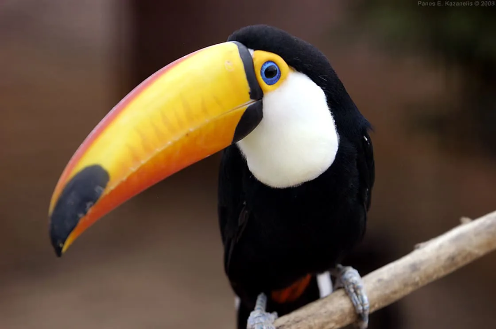

Hábitat
Los tucanes son aves americanas, ampliamente distribuidas desde México hasta Argentina.
Normalmente prefieren las selvas húmedas tropicales de baja altitud, aunque también existen especies adaptadas a los bosques templados a 3000 msnm.
Sus nidos suelen estar en agujeros dentro de los árboles. Es una especie sedentaria, que habita la misma región toda su vida.
Estilo de vida
Los tucanes son aves muy sociables. Suelen andar en pareja o en grupos pequeños que pueden alcanzar la docena. En general permanecen en las ramas de los árboles.
En algunos lugares se los tiene por aves parlanchinas, semejantes a los loros, pero en realidad no son capaces de repetir demasiados sonidos. Su graznido puede en ocasiones asemejarse a una voz humana.
Se los puede domesticar, aunque nunca pierden su naturaleza fiera y territorial, lo cual exige mantenerlos en jaulas separadas. Lo mejor, en todo caso, es observarlos en su hábitat natural.
Caracteristicas
-
El tucán utiliza su hermoso pico para alcanzar frutas que se encuentra en ramas muy pequeñas, y además de alcanzarlas, también les sirve para pelarlas.
-
Los tucanes en ocasiones suelen comer otros animales como insectos, otros pájaros de tamaño más pequeño y a veces suelen comer lagartos.
-
En cuanto a los colores del tucán, estos pueden variar de acuerdo con la especie de tucán de que se trate. Tanto el color de su cuerpo como el color de su pico, estos pueden ser negros, amarillos, anaranjados, morados, etc., dependiendo siempre de la especie en particular.
-
También tiene una lengua muy larga, que incluso puede alcanzar los 14 cm de longitud, pero es muy angosta y aplanada, terminando en una punta.
-
Las alas del tucán son pequeñas, cortas y redondeadas; y su cola es cuadrada en algunas especies, y esta es la responsable de llamar la atención, ya que tiene la costumbre de moverla de arriba hacia abajo.